O cano das armas de fogo é produzido a partir de um cilindro de aço, perfurado longitudinalmente, em sua região mediana, por uma broca, sendo, posteriormente, calibrado e polido. A alma de uma arma nada mais é que a parte interna de seu cano, pelo qual são expelidos os projéteis. Assim, quanto às almas de seus canos, as armas podem ser classificadas em armas de alma lisa, de alma raiada e mistas: a) armas de alma lisa – são aquelas cuja superfície interna do cano é, con forme o próprio nome indica, lisa e total ou parcialmente cilíndrica (em função da presença ou não de choke, conforme será discutido adiante), de tal modo que uma seção reta do cano sempre gera uma circunferência. Nesta categoria enquadram-se as espingardas; b) armas de alma raiada– são aquelas cujo cano foi provido, internamente, de estrias paralelas e helicoidais, constituídas por um número equivalente de sulcos (as raias) e de cristas (os cheios). Quando se fala no raiamento de uma arma de fogo, entretanto, na verdade está subentendido que cada “raia” é constituída por um par crista-sulco ou raia-cheio. Assim, quando se diz que uma arma possui um raiamento do tipo 6, por exemplo, ao olhar pelo cano serão vistas seis cristas intercaladas com seis sulcos. O objetivo dessas raias é imprimir um movimento de rotação ao projétil, ao longo de seu eixo longitudinal, enquanto este é acelerado através do cano, aumentando sua estabilidade em sua trajetória após ser expelido da boca do cano por causa deste momento angular. São exemplos de armas de alma raiada os revólveres, pistolas, carabinas, rifles e fuzis.
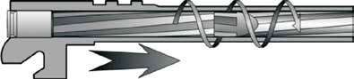
Figura 10 – Função do raiamento (Ilustração: Marcelo Jost).
O número, a orientação e a geometria das raias dependem da concepção do projeto pelo fabricante. Os raiamentos mais comuns são com cinco e seis raias, mas existem raiamentos constituídos a partir de duas raias e com números pares e ímpares. Quanto à sua orientação, os raiamentos podem ser dextrógiros, quando as raias helicoidais foram geradas no sentido horário, e sinistrógiras, quando foram geradas no sentido anti-horário. Abaixo podem ser vistas duas figuras de canos de armas de fogo: um com raiamento 6-D e o outro com raiamento 6-S.
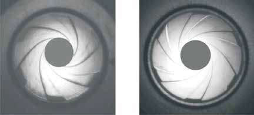
Figura 11 – Raiamento 6-D (seis raias dextrógiras), à esquerda, e raiamento 6-S (seis raias
sinistrógiras), à direita (Fotografias: Marcelo Jost). c) armas de alma mista – possuem um cano de alma lisa e outro de alma raiada, como na figura abaixo, a qual mostra um modelo Apache, da marca Rossi, produzido entre 1953 e 1958, que possui um cano de alma raiada calibre .22”, na parte superior, e outro de alma lisa calibre 36, na
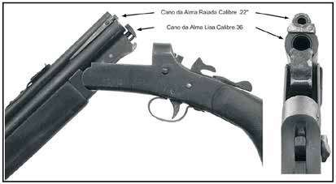
parte inferior.
Figura 12 – Arma com almas mistas (fotografia: Marcelo Jost).
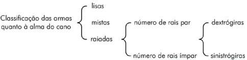
Figura 13 – Classificação quanto à alma. (figura: Marcelo Jost).
O termo carregamento, com relação a armas de fogo, é utilizado com o sentido de “colocar munição”, de tal modo que esta fique pronta para ser deflagrada quando necessário. Nesse sentido, as armas podem ser classificadas em armas de antecarga e armas de retrocarga. Armas de antecarga são aquelas nas quais o carregamento, tanto da carga propelente quanto do(s) projétil(eis), é feito pela boca do cano. Tal tipo de carre gamento caiu em desuso após a invenção dos cartuchos de munição, mas ainda podem ser encontrados exemplos funcionais, especialmente em armas artesanais.
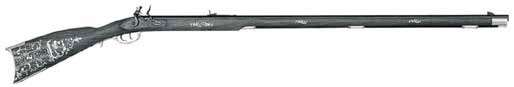
Figura 14 – Exemplo de uma arma de antecarga e com percussão por pederneira
Armas de retrocarga são aquelas nas quais o carregamento é efetuado por meio da inserção de um cartucho de munição em uma câmara localizada na parte posterior do cano. Nessa classificação enquadram-se a quase totalidade das armas de fogo modernas: revólveres, pistolas, espingardas, etc.
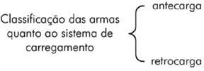
Figura 15 – Classificação quanto ao sistema de car
regamento (figura: Marcelo Jost).
O sistema de inflamação nas armas de fogo, responsável pela ignição da carga de propelente, acompanhou a evolução não somente dos tipos de pólvora, mas também o advento do cartucho e da introdução das cápsulas de espoletamento. Excetuando-se os sistemas obsoletos de inflamação - como o sistema por mecha (no qual a pólvora é inflamada por meio de um pavio) e o por atrito (na qual a pólvora é inflamada por meio de faísca), as armas podem ser classificadas, em relação ao sistema de inflamação, como elétricas e de percussão. Armas de inflamação elétrica são, de modo geral, armas militares e de uso restrito, as bazucas e as peças de artilharia, nas quais a ignição da carga de propulsão é efetuada por meio de um contato elétrico. As armas de percussão podem ser divididas em duas categorias: armas de percussão extrínseca e intrínseca.
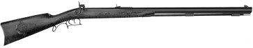
Figura 16 – Exemplo de arma com percussão extrínseca.
Armas de percussão extrínseca são aquelas nas quais a espoleta é uma peça independente da carga de projeção, sendo colocada sobre uma pequena chaminé, a qual se projeta na parte superior do cano e se comunica com o seu interior por meio de um ouvido. No momento da percussão, efetuada por uma peça denominada cão, a explosão da espoleta é dirigida para o interior do cano, através do ouvido, incendiando a carga de projeção. O uso de armas de percussão extrínseca, geralmente presente em armas de antecarga portáteis, encontra-se bastante restrito na atualidade. Armas de percussão intrínseca são armas de retrocarga nas quais a espoleta está incorporada à estrutura do cartucho de munição, sendo as mais práticas e mais utilizadas armas da atualidade. Conforme o tipo de cartucho de munição utilizado, estas armas podem ainda ser subdivididas em duas categorias: armas de percussão intrínseca central e percussão intrínseca radial. Armas de percussão intrínseca central são aquelas nas quais a munição possui uma cápsula de espoletamento embutida no centro da base do cartucho. Devido à possibilidade de recarga dos cartuchos de munição e também pela homogeneidade de queima da carga de propulsão após a percussão, este tipo de armamento é o mais utilizado na atualidade, incluindo revólveres, pistolas, carabinas, fuzis, espingardas, etc.
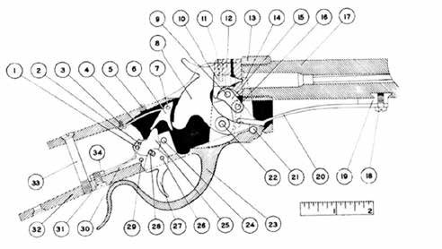
Figura 17 – Arma com percussão intrínseca central. Notar que o pino per
cussor, indicado pelo número 10, percute o cartucho no centro de sua base. Armas de percussão intrínseca radial, anelar ou periférica (rimfire) são aque las nas quais a munição possui um ressalto oco na base do cartucho no interior do qual se encontra a mistura iniciadora. A percussão, ao invés de se dar no centro da base do cartucho, se dá na sua borda. As armas de percussão radial, apesar de ainda serem produzidas em grande quantidade, estão praticamente restritas ao calibre .22” (vinte e dois centésimos de polegada).
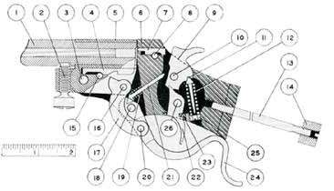
Figura 18 – Arma com percussão intrínseca radial. Notar que o per
cussor, indicado pelo número 7, percute o cartucho em sua borda.
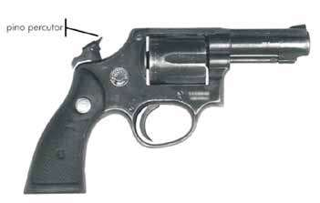
Figura 19 – Arma com percussão intrínseca central direta (Foto:
Marcelo Jost). As armas de percussão intrínseca podem ainda ser classificadas como de percussão direta ou indireta conforme o mecanismo de percussão utilizado. Nas armas de percussão intrínseca direta, o cão ou martelo possui um pino percussor diretamente usinado ou afixado a seu corpo, de modo que o próprio cão é responsável pela percussão da espoleta. Nas armas de percussão intrínseca indireta, por outro lado, a energia do cão ou martelo é transferida para a cápsula de espoletamento por meio de um pino, denominado pino percussor, geralmente flutuante e afixado à armação ou ao ferrolho da arma. Dessa forma, o cão bate no pino percussor que, por sua vez, percute a cápsula de espoletamento.
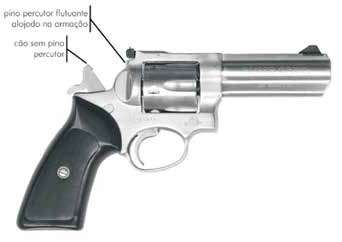
Figura 20 – Arma com percussão intrínseca central indireta
(Foto: Marcelo Jost).
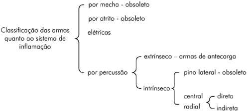
Figura 21 – Classificação quanto ao sistema de inflamação (Figura: Marcelo Jost).
As armas de fogo podem ser divididas, quanto ao seu funcionamento, em armas de tiro unitário, repetição, semiautomática ou automáticas. Armas de tiro unitário são aquelas que possuem retrocarga manual e cano com apenas uma câmara, no qual um único cartucho pode ser colocado. Após o disparo ser efetuado, o cartucho utilizado deve ser extraído, e um cartucho íntegro deve ser inserido na câmara. As armas de tiro unitário estão mais restritas, na atualidade, a armas longas, como espingardas, mas existem exemplos de garruchas de diversos calibres que se classificam como armas de tiro unitário. Dependendo do número de canos que a arma possui, as armas de tiro unitário podem ser subdivididas em tiro unitário simples e tiro unitário múltiplo.
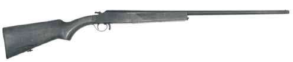
Figura 22 – Espingarda de tiro unitário simples (Figura: Carlos Magno de Souza Queiroz).
As armas de tiro unitário simples são caracterizadas pela presença de apenas um cano, tal como em espingardas de cano único, fuzis de carregamento manual e pistola de tiro único.
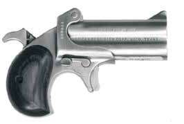
Figura 23 – Arma com tiro unitário múltiplo
(Figura: Marcelo Jost). As armas de tiro unitário múltiplo podem possuir vários canos, mas de modo geral apenas dois, paralelos ou sobrepostos, cada um com seu sistema de disparo independente. Deste modo, a arma comporta-se como um par de armas de tiro unitário simples acoplado sobre uma mesma coronha. Exemplos destas armas são as espingardas de caça de dois canos e as garruchas. Armas de repetição são aquelas que possuem carga para dois ou mais tiros e nas quais apenas a força muscular do atirador é a responsável pelo acionamento dos mecanismos de disparo e pelas operações prévias e necessárias ao disparo seguinte. Nas armas de repetição, o sistema de disparo é único, independente mente do número de canos, existindo um sistema mecânico de alimentação que é responsável por extrair ou reposicionar a munição deflagrada e trazer a munição íntegra para a câmara de combustão, preparando a arma para um novo disparo. Como exemplos, podem-se citar a quase totalidade dos revólveres e as armas longas de aferrolhamento manual.
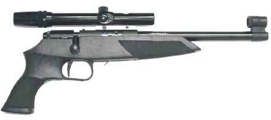
A d tiã(Fi M lJ t)
Figura 24 – Arma de repetição (Figura: Marcelo Jost).
As armas semiautomáticas são aquelas nas quais a força muscular do atirador é responsável apenas pelo acionamento do mecanismo de disparo, sendo que a energia de expansão dos gases, provenientes da combustão da pólvora, é responsável por efetuar o acionamento do mecanismo de repetição. Como exemplos de armas semiautomáticas podem-se citar a maioria das pistolas. O conjunto de ações “acionamento do gatilho pelo atirador + deflagração da munição + realimentação pelo sistema de repetição da arma” é denominado ciclagem. As armas semiautomáticas efetuam apenas um ciclo completo a cada acionamento do gatilho, ou seja, para efetuar um novo disparo, o atirador deve liberar o gatilho e acioná-lo novamente, o que também é denominado tiro intermitente.
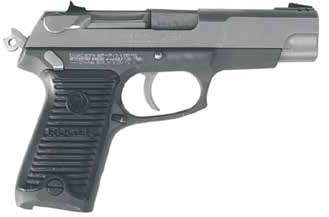
Figura 25 – Arma semiautomática (Figura: Marcelo Jost).
As armas automáticas são aquelas nas quais a força muscular do atirador é responsável pelo acionamento do mecanismo de disparo apenas no primeiro disparo, sendo que a energia de expansão dos gases, provenientes da combustão da pólvora, é responsável por continuar a ciclagem da arma enquanto o atirador mantiver acionado o gatilho e ainda houver munição íntegra disponível na câmara de combustão. Nesse caso, a arma efetua o tiro contínuo ou em rajada. Como exemplos destas armas podemos citar as submetralhadoras e os fuzis. Cabe mencionar que uma grande parte dos armamentos de assalto modernos possui chaves seletoras que permitem ao atirador escolher diversos modos de disparo, fornecendo mais versatilidade ao armamento. Assim existem modelos que possuem tiro intermitente, rajada de três tiros, rajada de cinco tiros, rajada contínua, etc. Nestes casos, como dentre outros modos a arma possui o modo automático, ela é classificada como arma automática.
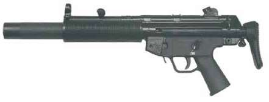
Figura 26 – Arma com seletor de tiro para tiro semiautomático, rajada para três
tiros, rajada para cinco tiros e rajada full, ou automática (Figura: Marcelo Jost).
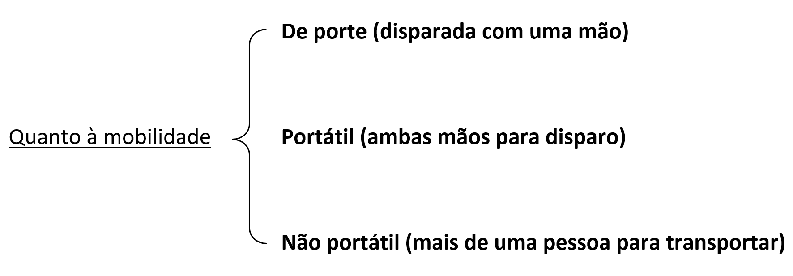
Figura 27 – Classificação quanto ao funcionamento (Figura: Lehi Sudy).
As armas de fogo podem ser divididas, quanto à sua mobilidade, em armas fixas, móveis, semiportáteis, não portáteis, portáteis ou de porte. As três primeiras categorias estão vinculadas a armamentos utilizados pelo exército, mas são as três últimas que interessam a criminalística. Nesta classificação, assim como em outras, faz-se necessário ressaltar que há divergências entre a doutrina e as definições na legislação nacional. De maneira recorrente na literatura[5], encontramos a definição de armas portáteis como aquelas que podem ser transportadas e utilizadas por uma só pessoa, dividindo-se em duas subclasses, longas e curtas. Ignorando esta definição, no Decreto 11.615/2023, as armas portáteis foram restringidas a armas longas, enquanto as curtas foram equiparadas às armas de porte, com as seguintes definições: a) arma de fogo de porte - arma de fogo de dimensão e peso reduzidos que pode ser disparada pelo atirador com apenas uma de suas mãos, como pistola, revólver e garrucha; b) arma de fogo portátil - arma de fogo cujo peso e cujas dimensões permi tem que seja transportada por apenas um indivíduo, mas não conduzida em um coldre, que exige, em situações normais, ambas as mãos para a realização eficiente do disparo; c) arma de fogo não portátil – aquela que, devido às suas dimensões ou ao seu peso:
Figura 28 – Classificação quanto à mobilidade de acordo com a legislação brasileira (Figura:
Lehi Sudy).